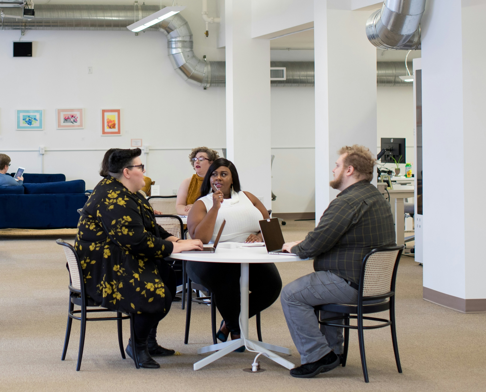

Inclusion: choosing the right illustration
This page is an alternative format for the slides, which includes my speaker notes.
But if you prefer, you can access the Google slides.
This is a lightning talk which lasts about 8 minutes
Be careful with illustrations
Speaker notes:
The first photo is from a LinkedIn post from Meryl Evans, she is deaf and was posting, that quite often, people illustrate articles about deaf people with a person signing, even though a lot of deaf people actually do not sign.
And then most of the times, the sign on the photo is the one on this slide where a person make a thumbs up with one hand and put it in the flat palm of the other hand. This sign means ‘Help’ in both American and British Sign language, from what I’ve found online, the only difference seems that in ASL there is a movement as well where you go up a bit. Using this sign as an illustration, means that quite often, the person is shown as needing help, so not the best message as it represents deaf people as if they always need help.
A lot of photos of people at work in a wheelchair also don’t seem to be real wheelchair users, like the second photo, showing a young woman in a suit, using a heavy wheelchair which looks more like what you would find in a hospital where another person is pushing it, rather than the model that someone who uses wheelchairs independently for mobility would use.
Visible differences
Speaker notes:
When you search for ‘diversity’ or ‘inclusion’ images, you will usually come up with people of different skin colours, one person will be in a wheelchair, one will have a head scarf and you will have a good mix between people presenting as man or woman.
I understand that there are some constraints with what you can show in a photo or illustration if you don’t have too many people on it and you can only show visible aspects of differences.
But there are some visible differences you don’t see much.
On this slide, we have an illustration with 21 people with a good diversity of characteristics.
You do have a person in a wheelchair, so we have disability covered.
Two with a head scarf and one with a turban, so religion is covered as well.
A good mix of skin colours and different type of hairs, a good mix between people presenting as man or woman and even some who could be non-binary.
Two have grey hair so would probably represent older people, which you don’t always have in this type of illustration.
No one seems very young.
There is one visibly pregnant woman which again you usually don’t often see on illustrations for inclusion
No one is very tall or very short but you can find illustrations with these characteristics (usually it’s a man who is very tall and a woman is very small)
But one thing that is very hard to find is someone who is fat.
Source of the illustration: RTI (Research Triangle Institute)
{kind=link}
Plus size? Higher-weight? Fat people


Speaker notes:
Some of you might be chocked that I used the word ‘Fat’.
There is no agreement about the best word to use.
The term overweight is problematic as it sounds like there is a ‘normal’ weight to be, and the term obese is not liked either, ‘plus size’ refers to clothes more than people but when looking for photos to illustrate this, plus size seems to be used as a category for photos. Another article was mentioning the terms ‘Higher-weight’ or larger-bodied. Not sure they work either personally.
Like many people concerned by this, I describe myself as fat, even though I’ve lost a lot of weight since I was diagnosed with diabetes. I have no problem with the word, but I would not use this term to describe another person, as some people could be offended.
The fact that we struggle to name it, just shows how uneasy our society is with this.
Being fat is a visible difference which is made invisible because we often do not want to address this. We can make this better by normalising using photos like the ones on this slide.
The first photo is one I used in a work context, with 3 people sitting on chairs which look like kitchen chairs more than office chairs, two people are white, one person is black and they are sitting around a table with laptop, having a discussion in what could be the kitchen space of a workplace.
The second photo is showing plus size women having fun and drinks in an outdoor pool, most are white, some have red sunburned skin, and one is Black with a big smile and raising hands while holding a drink. In the background, one is laying on a colourful inflatable buoy.
If you want to read more about this:
- Changing the terminology to ‘people with obesity’ won’t reduce stigma against fat people - The conversation
- Inclusive Language For Higher-Weight People
- Your fat friend
Source of the photos:
Photos for inclusion
- Allgo - Free Plus-Size Stock Photos
- Positive and realistic depictions of later life - Centre for ageing better
- Stock photos of people with disabilities - Webaxe
- Free Stock Images Of Our Community At Work - Jopwell
- Nappy - Beautiful photos of Black and Brown people, for free
- UK Black Tech - Free Stock photos
Describe your illustration
Use an ‘alt text’ for it
If you are presenting to an audience, describe it
→ always assume that at least one person can’t see it
How to write good alt text for screen readers (by Craig Abbott)
Alternative text (longer guidance by WebAim)